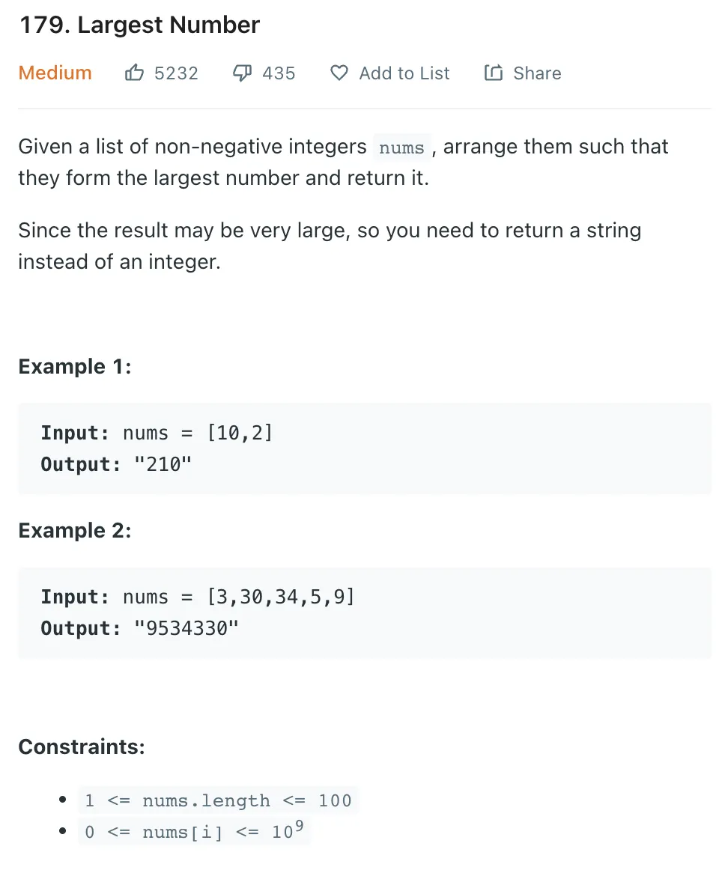

179. Largest Number
考過的公司：Asked by: Bytedance
Question

先自己想想看 🤔Try it yourself first 🤔
✍🏽 My Solution
Runtime: 10 ms, faster than 58.45% of Java online submissions for Largest Number. Memory Usage: 44.4 MB, less than 25.48% of Java online submissions for Largest Number.
class Solution {
public String largestNumber(int[] nums) {
String[] s_nums = new String[nums.length];
for (int i = 0; i < nums.length; i++) {
s_nums[i] = String.valueOf(nums[i]);
}
Arrays.sort(s_nums, (s1, s2) -> (s2 + s1).compareTo(s1 + s2));
if (s_nums[0].equals("0")) return "0";
StringBuilder sb = new StringBuilder();
for (int i = 0; i < s_nums.length; i++) {
sb.append(s_nums[i]);
}
return sb.toString();
}
}
🧠 Thought Process
- Why did I choose this particular implementation?
- 跟 solution1 一樣的寫法，只是把比較器換成 lambda 寫法
Solution #1 [比較]
Runtime: 7 ms, faster than 84.69% of Java online submissions for Largest Number. Memory Usage: 44.1 MB, less than 34.31% of Java online submissions for Largest Number.
class Solution {
public String largestNumber(int[] nums) {
String[] s_nums = new String[nums.length];
for (int i = 0; i < nums.length; i++) {
s_nums[i] = String.valueOf(nums[i]);
}
Comparator<String> comp = new Comparator<String>() {
@Override
public int compare(String str1, String str2) {
String s1 = str1 + str2;
String s2 = str2 + str1;
return s2.compareTo(s1);
}
};
Arrays.sort(s_nums, comp);
// 邊界條件處理 input[0,0,0....0],
//如果沒有加這個 output會變成"0000"，預期應該要是 "0"
if (s_nums[0].equals("0")) return "0";
StringBuilder sb = new StringBuilder();
for (int i = 0; i < s_nums.length; i++) {
sb.append(s_nums[i]);
}
return sb.toString();
}
}
Explanation (in my words)
-
How does their solution work?
- 为了避免用 int 型或者 long 型越界，所以我们需要把数字先转成
String。然后可以把待比較的字符串合并起来，例如：待比较的两个数字 x,y 组合成两个新的数字 string(x) + string(y) 和 string(y) + string(x) ，比较一下哪种组合构成的数字更大。 - 此外，在比较函数中我们单独分别判断了数字长度相等和不相等的情况，其实长度相等的情况也是可以合并到长度不相等的情况中去的。
- 对字符串数组进行字典排序！
- 两者加起来 后比较选择排在前面的，即较大的整数值！
- 30，3 ===》303 < 330
- Comparator 如何比較
- 假設 “987”，9跟8比 9跟7比 8跟7比
- compare() 代表每兩個函數拿出來比較，所以輸入的參數就是8跟9 兩個String，然後要判斷誰大，就要先拼起來，s1=89 s2=98，s2跟s1比較之後肯定是大於0，這時候我們就會說s2比s1大，依序兩兩排序後，就會變成987
- Comparator 詳解
- s2 > s1 我希望 str2 排在 str1 前边， s2.compareTo(s1) 返回 1， 也就是最后 compare(str1, str2) 返回 1，根据 Java 自然排序的规则，返回 1 意味着 str2 要排在 str1 前边，这跟我们的预期一样。 s2 < s1 也可以按照上边的逻辑分析。但是如果最后返回的是 s1.compareTo(s2), 也按照上边的逻辑分析的话，就会出现结果和预期矛盾的情况。所以一定是返回 s2.compareTo(s1);
- 对于排序来说，如果使用到 Comparator, 就一定涉及到调用 compare(T a, T b) 函数。 如果 compare 返回 -1， 在排序中则代表 a 排在 b 前边； 返回 0， a，b 怎么排都成，顺序无所谓； 返回 1 则意味着在排序中 b 应该排在 a 前边。
-
疑問：如果拼接得到的字符串结果更大的话，那么原本的整型的数字拼接结果也一定更大吗？比如
"210" > "102"，那么一定能得到210 > 102么？首先拼接成的两个字符串一定是等长的。等长的字符串在比较的时候，是按照字符串的各个字符从前向后逐个比较的，所以相当于先比较了百分位，然后比较十分位，最后比较个位。所以在字符串等长的情况下，字符串大，那么对应的整型也更大。但两个不等长的字符串就没有这个结论了， 比如 "2" > "10"，但是 2 < 10。
-
刷題心得：看到要求两个整数 x,y 如何拼接得到结果更大时，就想到先转字符串，然后比较 x+y 和 y+x。这是经验了。
- What is the space/time complexity of their solution?
- time: O(nlogn)
- space: O(n)
- 为了避免用 int 型或者 long 型越界，所以我们需要把数字先转成